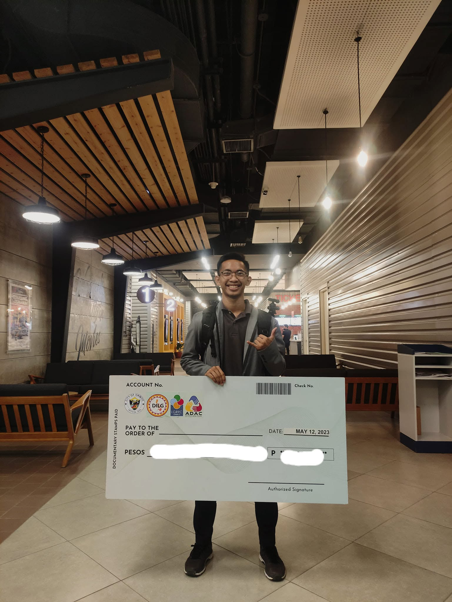
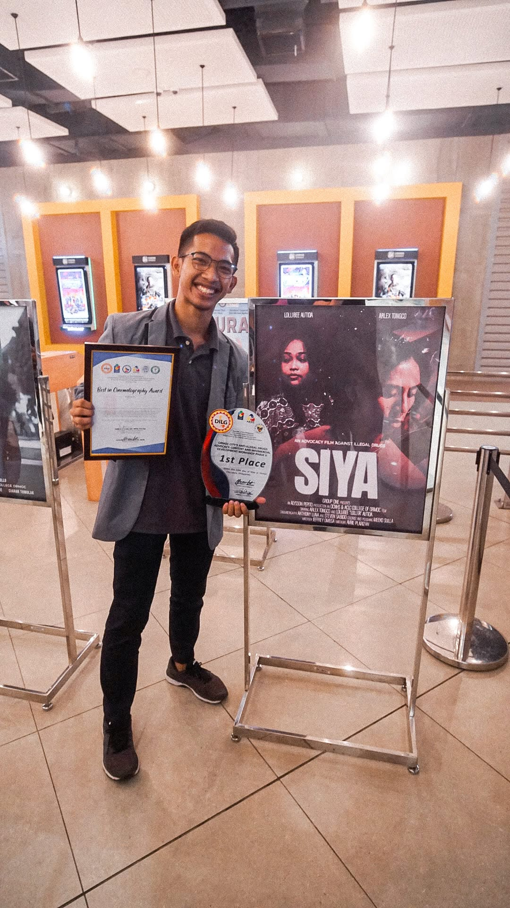
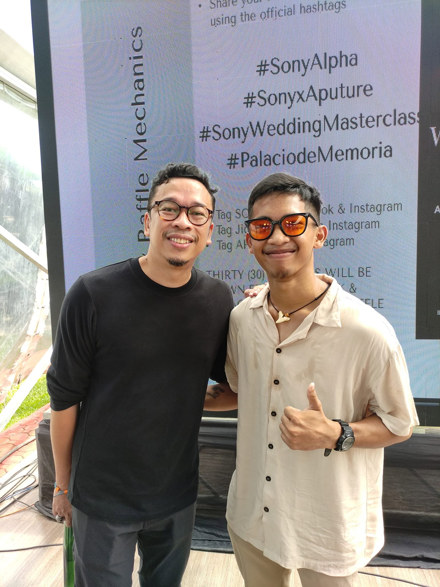
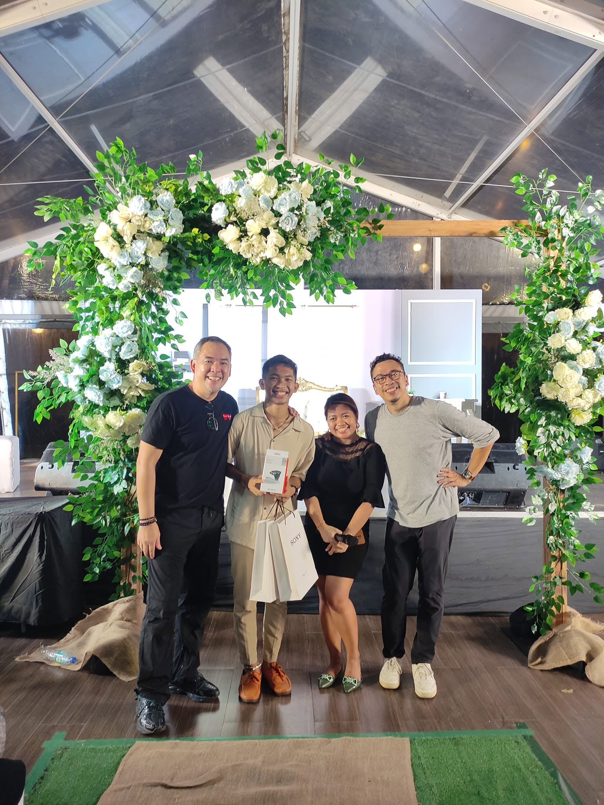
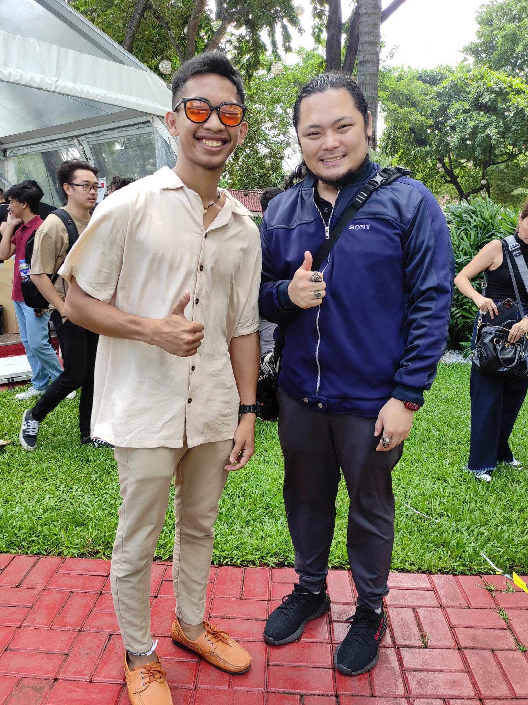

Our Beginning
Where Every Frame
Where Every Frame
Tells the Truth
Steven Noynay Films began with a passion for capturing real emotions and transforming moments into timeless visual stories.
What started as a love for photography and filmmaking soon evolved into a professional multimedia production company trusted by couples, brands, and organizations.
Today, every project is approached with creativity, attention to detail, and a commitment to cinematic storytelling.




